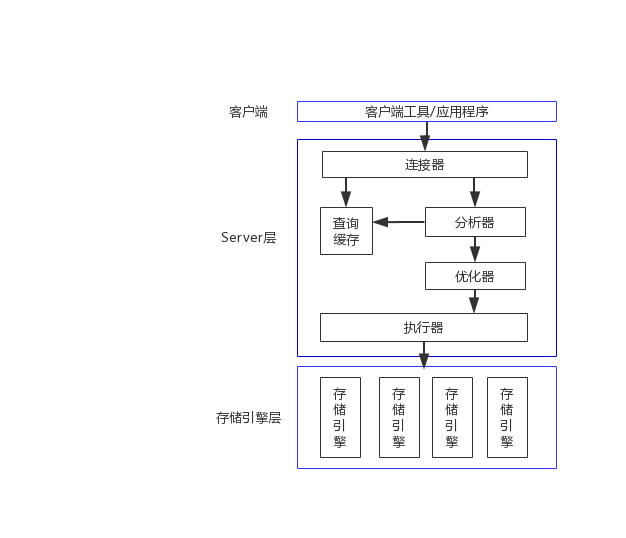

学什么
本次课程将侧重于基础理论的深入学习，主要包括 Java基础 + JDK源码、Web 基础、Spring+MyBatis、MySQL。
Java基础 + JDK源码
学习 Java 基础的同时深入相应的 JDK 源码，了解源码的实现理论。为什么要学习 JDK 源码的实现？请大家看一下下边代码的执行结果，实际运行一下，看看是不是和自己想象的一样？
Integer num1 = 127; Integer num2 = 127; System.out.println(num1 == num2); Integer num3 = 128; Integer num4 = 128; System.out.println(num3 == num4); Integer num5 = 127; Integer num6 = new Integer(127); System.out.println(num5 == num6); int num7 = 127; Integer num8 = 127; System.out.println(num7 == num8); int num9 = 128; Integer num10 = 128; System.out.println(num9 == num10); Double d1 = 127D; Double d2 = 127D; System.out.println(d1 == d2); Double d3 = 128D; Double d4 = 128D; System.out.println(d3 == d4); System.out.println(2 * 0.1 == 0.2); System.out.println(3 * 0.1 == 0.3);为什么会这样？我们来看一下 Integer 的源码实现（节选了部分）：
public static Integer valueOf(int i) { if (i >= IntegerCache.low && i <= IntegerCache.high) return IntegerCache.cache[i + (-IntegerCache.low)]; return new Integer(i); }private static class IntegerCache { static final int low = -128; static final int high; static final Integer cache[]; static { // high value may be configured by property int h = 127; String integerCacheHighPropValue = sun.misc.VM.getSavedProperty("java.lang.Integer.IntegerCache.high"); if (integerCacheHighPropValue != null) { try { int i = parseInt(integerCacheHighPropValue); i = Math.max(i, 127); // Maximum array size is Integer.MAX_VALUE h = Math.min(i, Integer.MAX_VALUE - (-low) -1); } catch( NumberFormatException nfe) { // If the property cannot be parsed into an int, ignore it. } } high = h; cache = new Integer[(high - low) + 1]; int j = low; for(int k = 0; k < cache.length; k++) cache[k] = new Integer(j++); // range [-128, 127] must be interned (JLS7 5.1.7) assert IntegerCache.high >= 127; } private IntegerCache() {} }Web 基础
学习 HTTP 协议，深入理解 Servlet/Filter/Session/Cookie/Session/JDBC 实现原理。其中一个实战中我们不使用任何第三方类库，自己实现一个简单的但是功能齐全的Web应用，以加深对相关理论的理解。
Spring+MyBatis
以Spring+MyBatis为基础的开发架构的使用，会对后端进行合理分层开发，以及如何测试（单元测试、集成测试）、常用设计模式的应用。常用分层法：
controller
接口层，对外暴露接口，可以是 Web、APP、小程序、公众号、第三方应用等。本身没有业务逻辑，直接调用 Service 层。
service
负责参数检验、Manager层的调用、跨领域的业务聚合、幂等事务等工作。
manager
“单领域层”，负责单个业务对象的逻辑。
dao
数据操作层，对 Manager 层提供数据读写/存储操作。
mapper
MyBatis XML 和数据库实体的映射。
repository
SpringJPA 数据访问。
entity
Java 对象和数据库表的映射。
MySQL
深入了解我们常用的 MySQL 相关原理
- MySQL 逻辑架构
- 锁：读写锁、锁粒度、表锁、行级锁
- 事务：ACID原则、事务隔离级别、死锁
- 日志：重做日志 redo log、归档日志 binlong、两阶段提交
- 多版本并发控制
- 存储引擎：InnoDB
索引：索引类型、索引优点、索引策略、索引和锁
MySQL 逻辑架构图如下：

因为本次课程主要侧重于 Java 后端，因此对于前端来说，我只会着重讲一下 JS 基础，而对于 CSS/HTML 部分只简单介绍一下。
大前端技术流派：
原生JS：jQuery/BootstrapVue：element-uiReact：ant.design微信小程序APP：Android/iOS/混合
本次课程对于前端部分，我会选择一个小程序前端框架和一个Vue框架来直接使用。